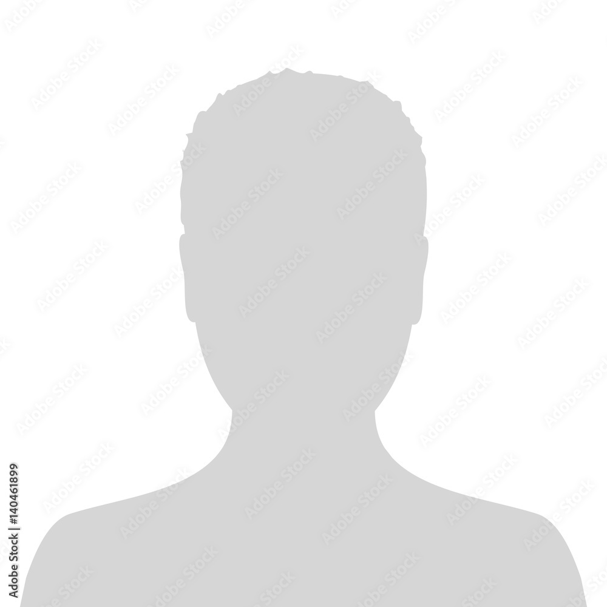

About me
Hello! I'm Wit Zakrzewski, and I'm a 20-year-old student attending Fontys University of Applied Sciences in Eindhoven. I'm majoring in ICT-Media Design, which involves the exciting combination of technology and creative media. I'm truly enthusiastic about both technology and art, and my goal is to bridge these worlds to create fresh and engaging solutions within the ever-evolving field of ICT-Media Design. Follow along with me as I venture into this captivating academic pursuit!